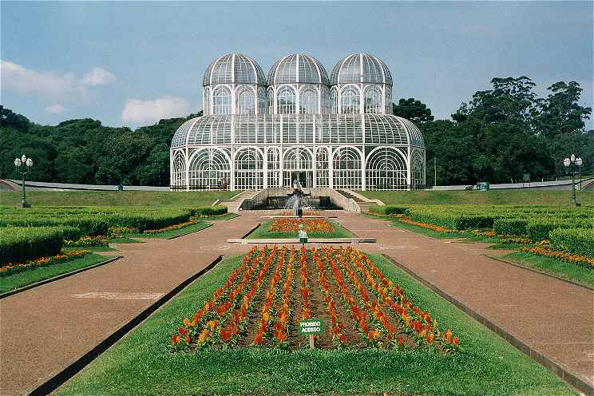
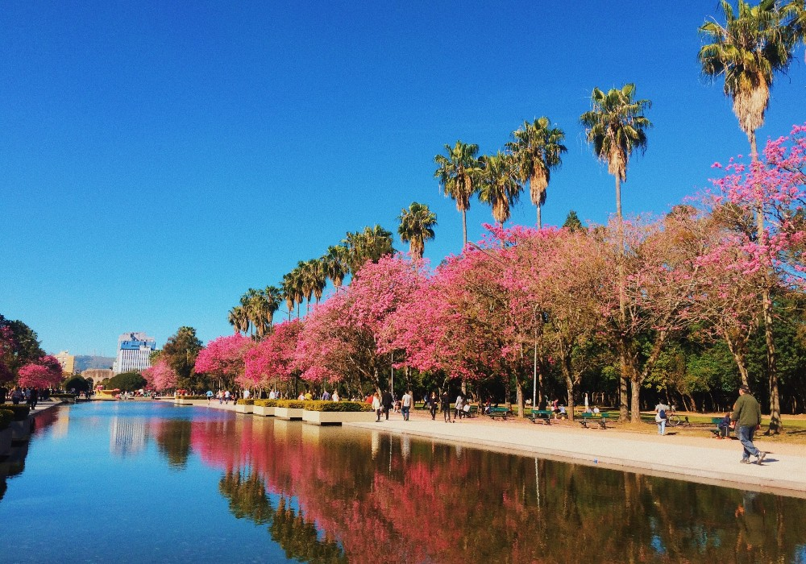
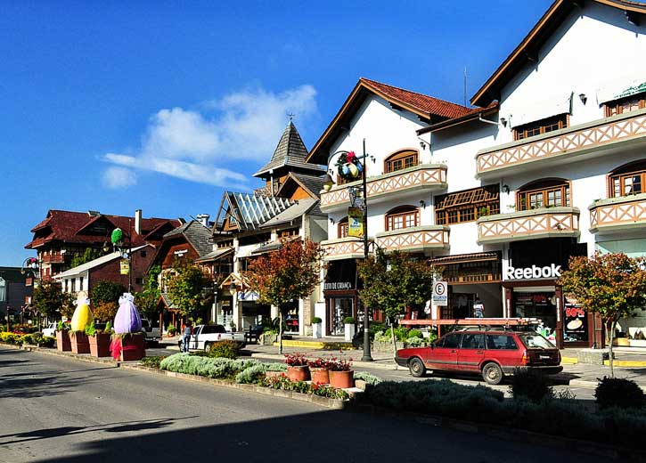

Queer Culture
Southern Brazil offers a charming fusion of European tradition, stunning landscapes, and a growing LGBTQIA+ scene. Curitiba and Florianópolis stand out with cultural festivals, inclusive bars, and increasingly recognized diversity events. Floripa, with its lush beaches and bohemian spirit, is a hotspot for queer summer getaways. Gramado, on the other hand, blends romance and sophistication in a warm, welcoming atmosphere for LGBTQIA+ couples — perfect for romantic trips. A region for those seeking charm and connection.
Beyond its scenic beauty, the South is becoming a symbol of progress and visibility for the LGBTQIA+ community. Pride events are gaining momentum, local tourism is embracing diversity more openly, and inclusive hospitality is on the rise — from boutique hotels to LGBTQIA+-friendly guided tours. This transformation makes the region not only a picturesque destination but also a safe and affirming space for travelers of all identities.